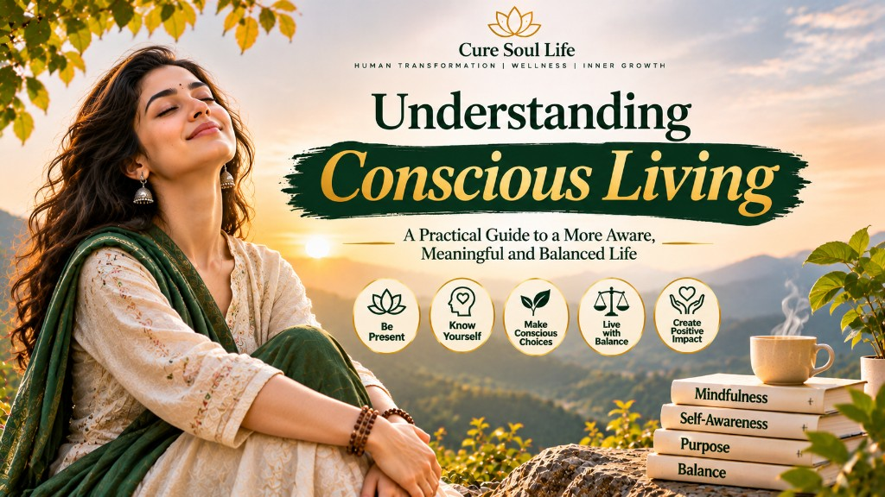

Understanding Conscious Living: Meaning, Benefits and How to Practise It in Everyday Life

Have you ever completed an entire day of activities and suddenly realised that you were not fully present for most of it?
You woke up, checked your phone, rushed through your morning, completed your responsibilities, responded to messages, worried about tomorrow and finally went to bed feeling exhausted.
The day passed, but did you actually experience it?
In modern life, we often become so occupied with responsibilities, expectations and distractions that we forget to pay attention to how we are living.
We make decisions without understanding our motivations, follow routines without questioning them and sometimes spend years pursuing goals without asking whether those goals genuinely make us happy.
This is where the concept of conscious living becomes important.
Conscious living is about becoming more aware of your thoughts, emotions, decisions, habits and surroundings. It encourages you to live intentionally rather than allowing every aspect of your life to run on autopilot.
It is not about becoming perfect, abandoning modern life or escaping your responsibilities. It is about understanding yourself better and making choices that reflect your values and priorities.
In this guide, we will explore what conscious living means, why it matters, its benefits and practical ways to incorporate it into your everyday lifestyle.
What Is Conscious Living?
Conscious living is the practice of approaching everyday life with awareness, intention and responsibility.
It involves paying attention to what you think, how you feel, why you make certain decisions and how your actions influence yourself and the people around you.
Instead of automatically following habits, expectations or social pressures, conscious living encourages you to pause and make more thoughtful choices.
For example:
- Instead of checking your phone every few minutes, you become aware of how you use technology.
- Instead of reacting immediately during an argument, you pause and consider your response.
- Instead of following a lifestyle simply because everyone else follows it, you question whether it suits your values.
- Instead of constantly worrying about the future, you learn to appreciate the present.
- Instead of pursuing success only for external recognition, you reflect on what success genuinely means to you.
At its core, conscious living is about creating a meaningful connection between your awareness, decisions and actions.
It is not about controlling everything in life. It is about becoming more intentional about the things you can influence.
Why Has Conscious Living Become Important in Modern Life?
Modern technology has made communication, information and daily activities more convenient than ever.
However, convenience does not always translate into well-being.
People frequently experience information overload, digital distractions, professional pressure and social comparison.
We may spend hours consuming information without taking time to reflect on what actually matters to us.
Consider how often you:
- Check your phone without a specific reason.
- Compare your progress with someone else's achievements.
- Make decisions based on other people's expectations.
- Continue habits without questioning their impact.
- Spend time thinking about the future while ignoring the present.
- Stay busy without feeling genuinely fulfilled.
These patterns can make everyday life feel automatic.
Conscious living encourages us to step back, observe our behaviour and become more aware of the choices we make.
It helps us move from simply reacting to life towards participating in it more intentionally.
10 Important Principles of Conscious Living
Understanding conscious living becomes easier when we explore the principles that form its foundation.
1. Self-Awareness: Understand Yourself Before Changing Your Life
Self-awareness is one of the most important foundations of conscious living.
It involves understanding your thoughts, emotions, beliefs, motivations, strengths and limitations.
Many people spend considerable time trying to understand other people while rarely examining their own behaviour.
Ask yourself:
- Why do I react in a particular way?
- What makes me feel genuinely happy?
- Which situations create unnecessary stress?
- Am I making decisions based on my values or external expectations?
- What habits are influencing my everyday life?
You do not need to answer every question immediately.
Regular self-reflection can help you understand your behaviour and make more intentional decisions.
2. Mindfulness: Learn to Live in the Present Moment
Mindfulness means paying attention to the present moment with openness and without immediately judging your experiences.
Our minds frequently move between past memories and future possibilities.
We remember old conversations, worry about upcoming responsibilities and sometimes overlook what is happening around us.
Practising mindfulness encourages you to reconnect with the present.
You can begin with simple activities:
- Pay attention while eating.
- Notice your breathing.
- Listen carefully during conversations.
- Observe nature during a walk.
- Perform everyday tasks without constantly checking your phone.
Mindfulness does not require you to eliminate thoughts. It encourages you to notice them without automatically reacting to everything that enters your mind.
3. Intentional Decision-Making: Choose Your Actions Carefully
Conscious living means understanding that everyday decisions influence the direction of your life.
From the food you eat to the people you spend time with, your choices contribute to your overall lifestyle.
Before making important decisions, consider:
- Does this decision align with my values?
- Am I choosing this because I genuinely want it?
- Am I acting out of fear or social pressure?
- What could be the long-term consequences?
- Is this decision supportive of my well-being?
Intentional decision-making does not guarantee perfect outcomes.
It simply means becoming more thoughtful about the choices you make.
4. Emotional Awareness: Understand Your Feelings
Emotions influence how we think, communicate and respond to different situations.
However, many people are not comfortable acknowledging their emotional experiences.
They may suppress frustration, ignore sadness or react impulsively when they feel overwhelmed.
Conscious living encourages emotional awareness.
Instead of immediately reacting to an uncomfortable emotion, pause and ask:
- What am I feeling right now?
- What might have triggered this emotion?
- What does this situation mean to me?
- How can I respond constructively?
Understanding your emotions does not mean allowing them to control every decision.
It means recognising them and responding with greater awareness.
5. Conscious Relationships: Build Meaningful Connections
The quality of your relationships can influence your emotional and social well-being.
Conscious relationships are built through mutual respect, honest communication, empathy and healthy boundaries.
Practise conscious relationships by:
- Listening without constantly interrupting.
- Expressing your feelings respectfully.
- Respecting other people's boundaries.
- Avoiding unnecessary comparisons.
- Spending meaningful time with loved ones.
- Taking responsibility for your behaviour.
A meaningful relationship does not require two people to agree on everything.
It requires the willingness to understand and respect each other.
6. Conscious Consumption: Become Aware of What You Consume
Conscious living also involves paying attention to what enters your life through food, media, information and everyday purchases.
Ask yourself whether your consumption habits support your well-being.
For example:
Food: Are you paying attention to nutritional quality and your body's needs?
Digital content: Does the content you consume inform, educate or unnecessarily disturb you?
Shopping: Are you buying something because you need it or because you feel pressured to own it?
Information: Are you evaluating information thoughtfully rather than accepting everything you read?
Conscious consumption encourages more responsible and intentional choices.
7. Gratitude: Appreciate What Already Exists
In a world that constantly encourages us to achieve more, it is easy to overlook what we already have.
We focus on future goals, financial ambitions and expectations while forgetting to appreciate ordinary experiences.
Gratitude is the practice of recognising and appreciating positive aspects of life.
You can practise it by:
- Writing down three things you appreciate each day.
- Expressing gratitude towards people who support you.
- Appreciating small personal achievements.
- Taking time to notice meaningful everyday experiences.
Gratitude does not mean ignoring difficulties or pretending that everything is perfect.
It means recognising positive experiences alongside life's challenges.
8. Conscious Use of Time: Give Attention to What Matters
Time is one of the few resources we cannot recover.
Yet, many people spend considerable portions of their day on activities that do not align with their priorities.
Conscious living encourages you to examine how you use your time.
Consider:
- Which activities genuinely matter to me?
- What consumes my attention unnecessarily?
- Am I making enough time for my health?
- Do I spend meaningful time with people I care about?
- Am I allowing myself enough rest?
You do not need to make every minute productive.
Rest, recreation and relationships are also meaningful uses of time.
9. Environmental Awareness: Understand Your Impact
Conscious living extends beyond personal development.
It also involves understanding how your actions affect your surroundings, community and environment.
You can begin with simple practices:
- Avoid unnecessary waste.
- Use resources responsibly.
- Reduce single-use products where practical.
- Respect public spaces.
- Support responsible consumption.
- Be considerate towards other people and living beings.
Small responsible choices can contribute to a more thoughtful lifestyle.
10. Continuous Growth: Keep Learning About Yourself
Conscious living is not a destination that you reach once and maintain forever.
Your experiences, responsibilities, relationships and priorities will continue changing.
Therefore, developing self-awareness requires continuous reflection and learning.
Read, explore new ideas, question your assumptions and remain open to changing your perspective.
The objective is not to become a perfect person.
It is to become more aware of who you are and how you want to live.
Benefits of Conscious Living
Practising conscious living can support several aspects of personal and overall well-being.
1. Greater Self-Awareness
Regular reflection can help you understand your behaviour, emotional patterns, motivations and personal values.
2. Better Decision-Making
When you become more aware of your priorities, you may find it easier to evaluate choices and avoid unnecessary decisions driven by external pressure.
3. Improved Emotional Regulation
Recognising your emotional responses can help you pause before reacting and communicate more thoughtfully.
4. More Meaningful Relationships
Greater awareness can encourage empathy, active listening and healthier communication.
5. A More Balanced Lifestyle
Conscious living encourages you to pay attention to different aspects of life, including physical health, mental wellness, relationships, work and relaxation.
6. Greater Appreciation of Everyday Experiences
By paying attention to the present moment, you can become more aware of experiences that might otherwise go unnoticed.
These benefits are not automatic or guaranteed. They develop through consistent practice and depend on individual circumstances.
How to Practise Conscious Living Every Day
You do not need to completely change your lifestyle to begin living consciously.
Start with a few practical habits and gradually build upon them.
Morning: Begin Your Day With Awareness
Instead of immediately checking your phone, give yourself a few moments to prepare for the day.
Try:
- Waking up at a reasonably consistent time.
- Practising a few minutes of mindfulness.
- Setting one meaningful intention.
- Paying attention to your morning routine.
- Avoiding unnecessary digital distractions.
During the Day: Make Intentional Choices
Throughout the day, pause occasionally and notice how you are spending your time and attention.
Try:
- Eating without distractions.
- Listening carefully during conversations.
- Taking short breaks from screens.
- Responding thoughtfully instead of reacting immediately.
- Focusing on one important task at a time.
Evening: Reflect on Your Experiences
Before going to sleep, spend a few minutes reflecting on your day.
Ask yourself:
- What did I learn about myself today?
- Which decision made me feel good?
- When did I react without thinking?
- What am I grateful for?
- What can I improve tomorrow?
This simple reflection can help you become more aware of your habits and choices.
Conscious Living vs Mindless Living: Understanding the Difference
One way to understand conscious living is to compare it with everyday behaviour that happens automatically.
| Conscious living | Mindless living |
|---|---|
| Making intentional decisions | Acting automatically |
| Understanding emotions | Reacting impulsively |
| Being present | Constantly distracted |
| Questioning habits | Following habits without reflection |
| Appreciating experiences | Always seeking the next thing |
| Respecting personal values | Depending entirely on external expectations |
| Consuming thoughtfully | Consuming without awareness |
The purpose is not to judge yourself for everyday habits.
Everyone operates on autopilot sometimes.
The goal is to gradually become more aware of the moments when you have an opportunity to make a different choice.
A Simple 7-Day Conscious Living Challenge
If you want to start practising conscious living, try this beginner-friendly seven-day challenge.
Day 1 – Self-Awareness
Spend ten minutes writing about your thoughts, emotions and personal priorities.
Day 2 – Mindful Eating
Eat at least one meal without scrolling through your phone or watching something.
Day 3 – Digital Awareness
Observe how often you check your phone and reduce unnecessary screen distractions.
Day 4 – Gratitude
Write down three things you genuinely appreciate.
Day 5 – Conscious Relationships
Have one meaningful conversation without distractions. Listen carefully and be fully present.
Day 6 – Time in Nature
Spend some time outdoors and observe your surroundings without rushing.
Day 7 – Reflection
Review your experiences and identify which practices you would like to continue.
The challenge is not about completing everything perfectly. It is about experimenting with small habits that encourage greater awareness.
Common Misconceptions About Conscious Living
There are several misunderstandings about what it means to live consciously.
Misconception 1: Conscious living means meditating all day.
Reality: Meditation is one possible practice, but conscious living also involves everyday decisions, relationships, habits and responsibilities.
Misconception 2: You must leave modern society to live consciously.
Reality: You can practise conscious living while working, raising a family, using technology and managing everyday responsibilities.
Misconception 3: Conscious people never experience negative emotions.
Reality: Awareness does not eliminate difficult emotions. It can help you recognise and respond to them more thoughtfully.
Misconception 4: Conscious living means having a perfect lifestyle.
Reality: It is an ongoing practice. Mistakes, distractions and difficult days are normal parts of life.
Misconception 5: Conscious living is only a spiritual practice.
Reality: It can include spirituality, but it also involves practical aspects of everyday life, such as health, relationships, consumption and responsible decision-making.
Frequently Asked Questions About Conscious Living
1. What is conscious living in simple words?
Conscious living means being aware of your thoughts, feelings, actions and decisions instead of operating entirely on autopilot. It involves making intentional choices that reflect your values and support a meaningful lifestyle.
2. How can I start living consciously?
Start by observing your everyday habits, practising mindfulness, understanding your emotions and reflecting on your decisions. You can begin with just five to ten minutes of daily self-reflection.
3. What are the benefits of conscious living?
Conscious living can support self-awareness, thoughtful decision-making, emotional regulation, meaningful relationships and a more balanced lifestyle. Its benefits develop through consistent practice.
4. Is conscious living the same as mindfulness?
They are related but not identical. Mindfulness involves paying attention to the present moment, while conscious living is a broader approach that includes mindfulness, intentional decisions, self-awareness, relationships and responsible everyday actions.
5. Can conscious living improve mental well-being?
Practices associated with conscious living, such as mindfulness, self-reflection and intentional routines, may support mental well-being. However, they are not substitutes for professional mental health care when needed.
6. What is the difference between conscious and unconscious behaviour?
Conscious behaviour involves awareness and intentional decision-making. Unconscious or automatic behaviour happens with little deliberate attention. Everyday life involves both, and developing awareness can help you recognise when to make more thoughtful choices.
7. Does conscious living require meditation?
No. Meditation can be helpful, but it is not compulsory. You can practise conscious living through mindful eating, intentional communication, self-reflection, responsible consumption and thoughtful decision-making.
8. How is conscious living connected to spirituality?
Many spiritual traditions emphasise awareness, compassion, reflection and living according to meaningful values. These ideas overlap with conscious living, although conscious living can also be practised without following a particular religion or spiritual tradition.
9. Can I practise conscious living while having a busy lifestyle?
Absolutely. Conscious living does not require a completely free schedule. You can incorporate awareness into ordinary activities such as working, eating, travelling, communicating and managing responsibilities.
10. How long does it take to develop a conscious lifestyle?
There is no fixed timeline. Awareness develops gradually through repeated reflection and intentional practice. Start with small changes and continue building habits that fit your lifestyle.
Final Thoughts: Stop Living on Autopilot and Start Living With Awareness
Life is not simply about completing responsibilities, achieving targets, earning money or meeting other people's expectations.
These things may be important, but they are not the only things that make life meaningful.
It is equally important to understand yourself, appreciate your experiences, build meaningful relationships and recognise the impact of your everyday decisions.
Conscious living encourages you to pause and ask an important question:
Am I actually living the life I want, or am I simply following a routine without questioning it?
You do not need to have all the answers immediately.
Start by becoming aware of your thoughts. Pay attention to your choices. Understand your emotions. Appreciate the present and remain open to learning.
Small moments of awareness can gradually influence the way you experience everyday life.
At Cure Soul Life, we believe that human transformation begins with self-awareness and develops through conscious choices, inner growth and a deeper understanding of life.
Do not just move through life. Become aware of how you are living it.
Your journey towards conscious living begins with one intentional choice.
Disclaimer: This article is intended for general educational and wellness purposes. It is not a substitute for professional medical or mental health advice, diagnosis or treatment.
Back to the blog